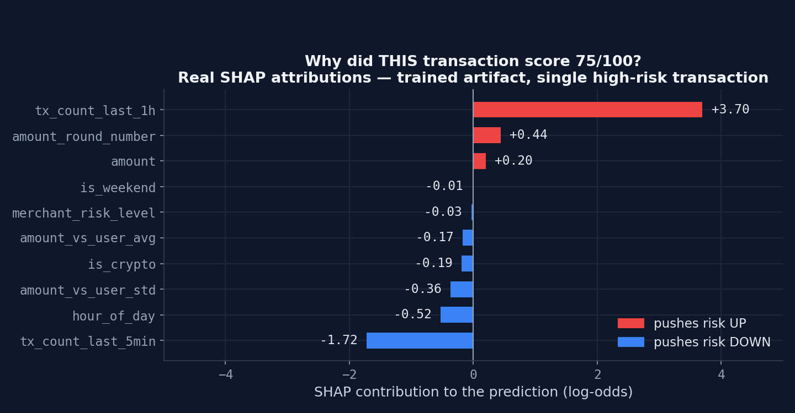

Explainability with SHAP
Every prediction comes with its receipt.
A score says how much risk; SHAP says which features caused it. SHAP (SHapley Additive exPlanations) borrows from cooperative game theory: each feature is a player, the prediction is the payout, and Shapley values split the credit fairly across features according to their marginal contribution over all possible feature orderings.
In practice, the system runs TreeExplainer — an exact, polynomial-time SHAP
algorithm specialized for tree ensembles — asynchronously after each scored transaction, and
persists the top-5 contributions by absolute value, expressed in log-odds:
the model's raw additive scale, before any sigmoid converts it into a probability. The React
dashboard renders these as attribution cards.

This closes the loop between layers: rules give named triggers, SHAP gives feature-level causes, and together they turn a black-box score into a defensible narrative. Attributions are computed in a dedicated worker precisely so explanation cost never sits on the scoring request path.